-
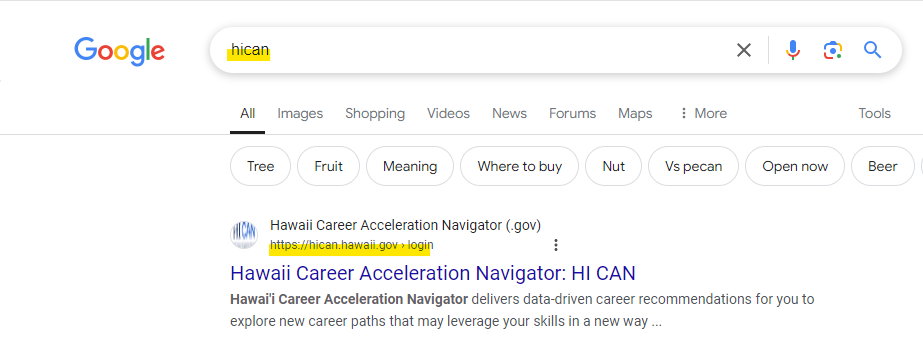
Look up the HICAN login website by typing HICAN into your search browser or visiting this link
-
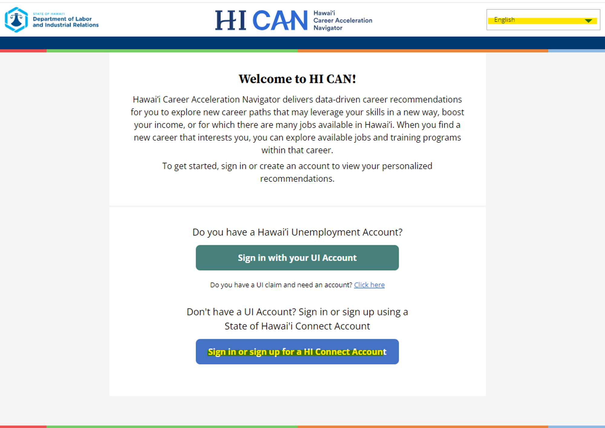
Step 1 will take you to this page. Click the drop down in the top right to change the language of the page, or
if a specific language is not listed, you can find a list of phone numbers that may provide further assistance.
Then, Click Sign in or Sign up for a HI Connect Account to create an account.
-
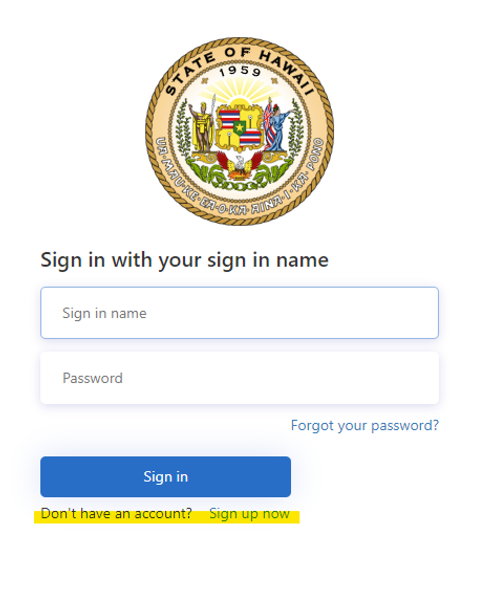
Step 2 will take you to this sign-in page. If you have a login from previously accessing the HICAN system,
sign-in using those credentials in the two clickable text boxes. If you are signing up, click Sign up now (highlighted in yellow)
-
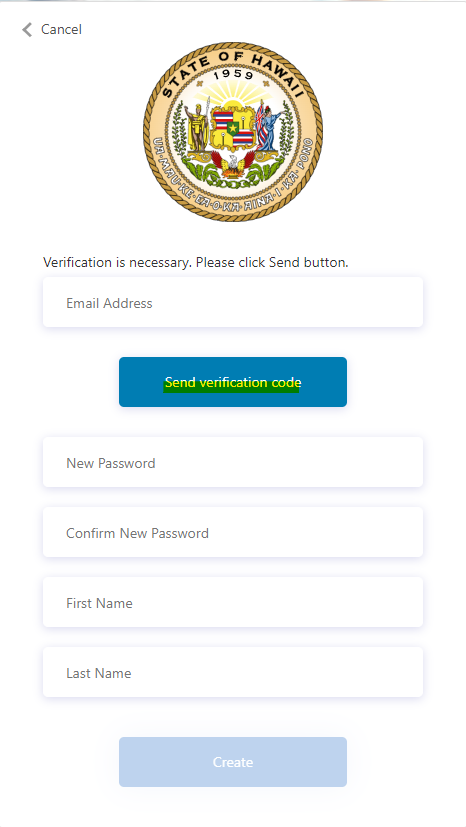
Step 3 will take you to this page. Put in your information, using an email that you have quick and direct access,
then click Send verification code. Save the verification code and put it into the box that loads, then click Create to make an account.
-
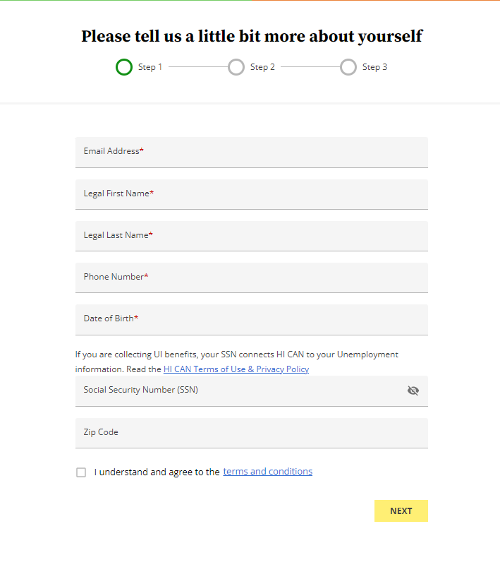
Once your account has been made, you will move through putting in your personal information.
First, legal name, birthdate, social security, phone number, and zipcode.
-
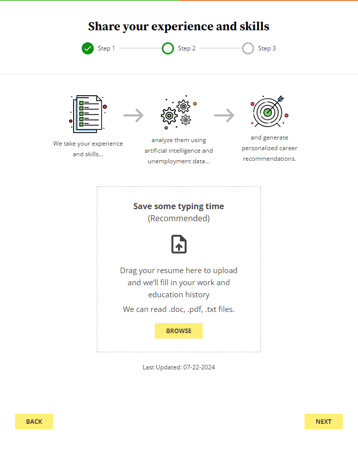
Then, your work experience/resume. Make sure you have dates of employment, job titles,
and other relevant information as this will be used to create an automated job search.
-
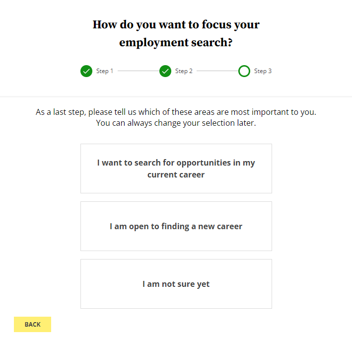
Finally, the areas you would like to use the HICAN system in connecting with employment.
-
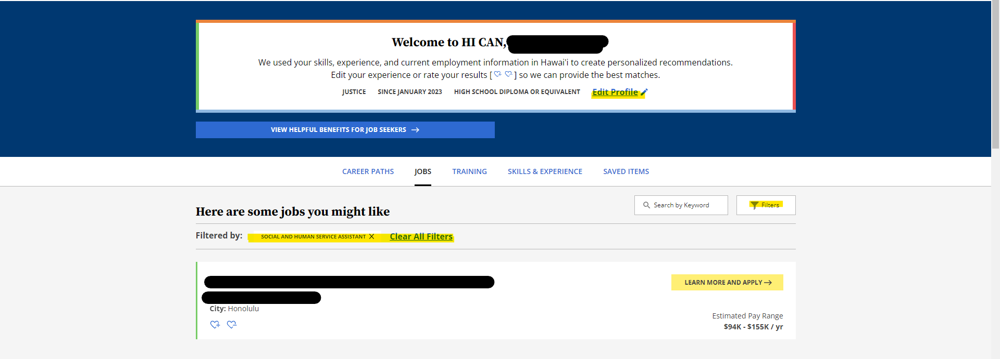
Once you have completed all the steps, you will be taken to the dashboard where you can search for jobs filtered to your preferences,
edit your resume, and connect with employers by clicking Learn More And Apply.
-
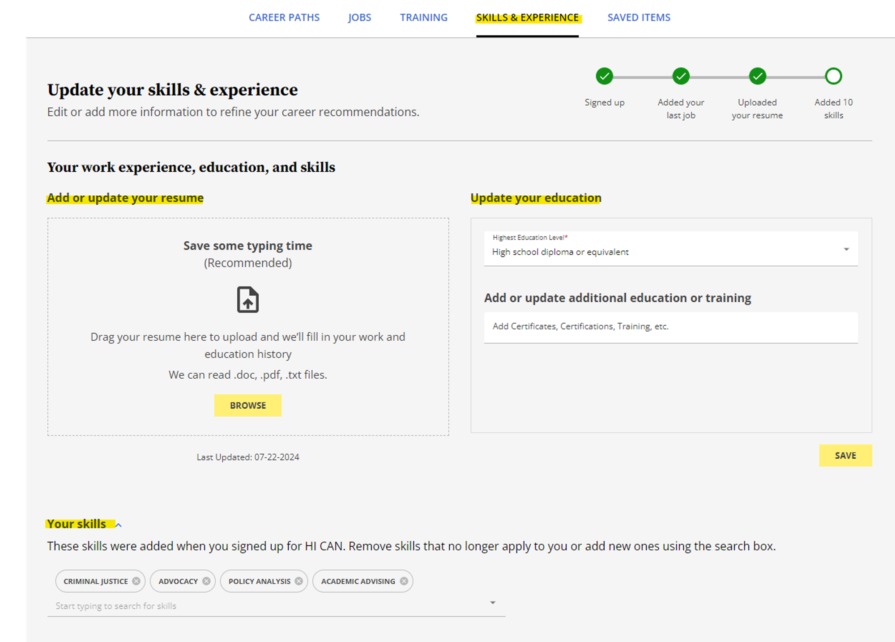
From the dashboard you can visit the Skills and Experience Tab to update your resume, education, and skills.
-
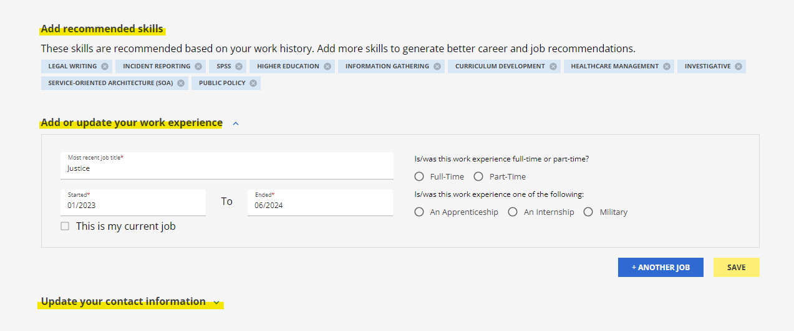
Additionally, under Skills and Experience you can choose from recommened skills, update work experience, and your contact information
which will be used to further filter recommended jobs for you to apply
-
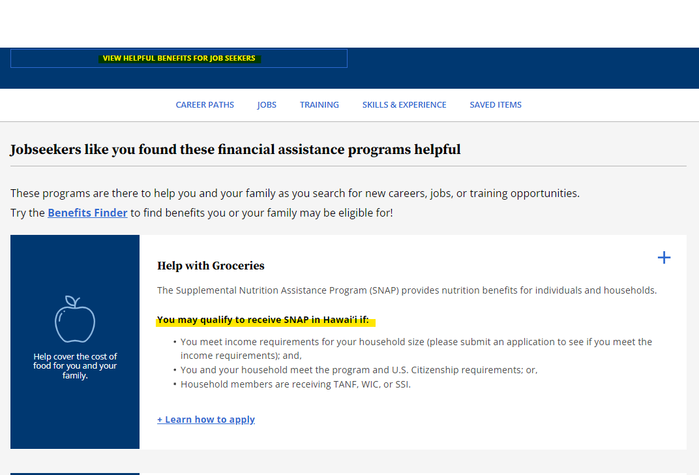
Another item on the dashboard is View Helpful Benefits for Job-Seekers where you can see if you qualify for assistance programs from the state like SNAP, see the eligibility requirements above.
-
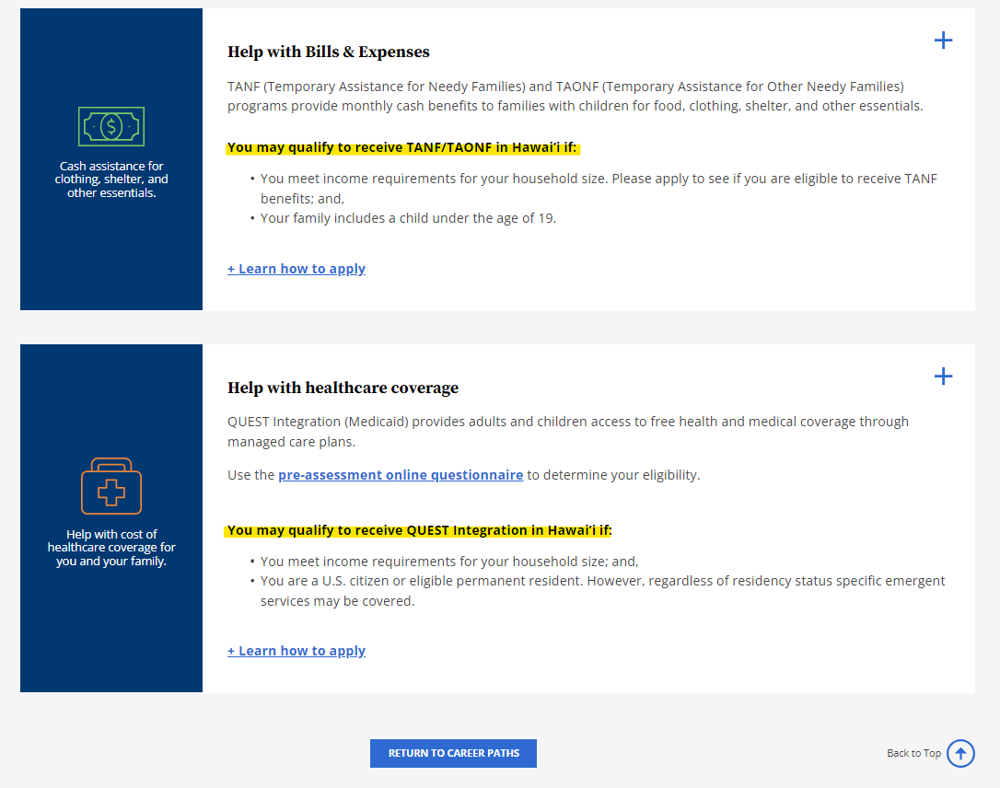
Additionally, under the View Helpful Benefits for Job-Seekers you can learn how to apply for help with bills & expenses as well as help with healthcare coverage and learn the eligibility requirements and application process for both.